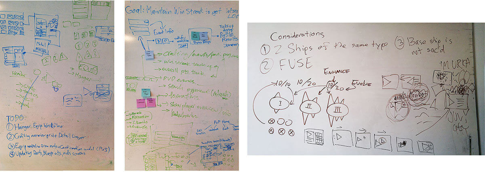

Hey, I'm Javan!
I'm a product designer with a background in HCI and engineering. My focus is in delivering evidence-driven and pragmatic design responses.
Many projects seen here are currently WIP, but updates are being made on a daily basis. Check back later to see the updated changes, or email me at javan.z.wang@gmail.com for a portfolio presentation.

CloudBreakers
Iteration of game systems using feedback gathered from diary studies.
Role
UX design
Qualitative user research
Usability testing
Prototyping
Duration
4 month
Company
Uken Games
Supervisor
Brian Lin
The Situation
I began my work term at Uken Games' CloudBreakers team at the beginning of 2016. This coincided with the Q1 Alpha release. Up until this point all feedback had been internal. The team decided to elicit external feedback from end users and other game developers to validate the decisions made.

A typical Friday at Uken.
Design objectives
- Creating a product that provides the player with a pleasant and intuitive experience.
- Designing with accordance to budget and timeline constraints.
- Designing systems that are compatible with past builds and in accordance with game design specifications, while keeping scalability in mind.
- Designing the product with the end user’s satisfaction and needs as the primary motivation.
Options explored
During the ideation process, I worked with my mentor and the game designer to flesh out the specifications and requirements of the system. The Dossier is used to showcase player progression by tracking their achievements and unlockables in the game.
Ultimately a decision was made to eliminate all but one of the candidates from the low fidelity mocks. The column based representation of the achievements proved to satisfy our design needs the best. The rationale for this is because it is unlikely that there would be more than 5 achievement categories for the players to track. By displaying all of the achievement progresses in a horizontal fashion, the player is presented with all of the key information they need. It was deemed unnecessary to have an "detailed view" for each achievement category since the information presented in the details panel is repetitive.

After decision on a general direction and understanding what the player expectations are, explorations on the different ways of executing on the requirements took place using low to mid fidelity mocks. These mocks are drafted up quickly using placeholder images and grayscale colours to prioritize speed over form.
Whiteboard ideation
From pen and paper to Sketch.

TL: Overworld Nameplate. TR: Dossier Overview Interface. BL: Player Profile Arena Information. BR: Crafting Interface.
User testing
Luckily my work term coincided with the Alpha playtest of CloudBreakers. The UX team had concerns in some of the general game design and gameplay directions. But in order to make our arguments more concrete we required validation in the form of external user feedback.
Flinto and Zeplin were used to do the heavy lifting, these tools vastly improve the speed at which the team was able to complete and collaborate on tasks. Flinto allowed us to quickly build out interactive (90% functional) prototypes extremely quickly, with full featured workflows and animations. Zeplin streamlined the transition from design to engineering by turning mockups into interactive design specs, enabling developers to generate assets and style code directly.
The UX team suggested that a closed beta would provide valuable user feedback for the studio. The playtest was designed in the form of a Longitudinal Diary user studies, and over 50 users participated in the playtest.
TypeForm.com was used to produce the playtest diary questions, and we enlisted help from UserTesting.com for feedback in the form user-emotion and user-behaviour videos (along with gesture recordings).
I was also granted the opportunity to speak in person with some of our users. What was especially valuable for me in this experience was being able to digest and dissect their comments from both a logical and emotional standpoint.
Flinto and Zeplin were used to do the heavy lifting, these tools vastly improve the speed at which the team was able to complete and collaborate on tasks. Flinto allowed us to quickly build out interactive (90% functional) prototypes extremely quickly, with full featured workflows and animations. Zeplin streamlined the transition from design to engineering by turning mockups into interactive design specs, enabling developers to generate assets and style code directly.
The UX team suggested that a closed beta would provide valuable user feedback for the studio. The playtest was designed in the form of a Longitudinal Diary user studies, and over 50 users participated in the playtest.
TypeForm.com was used to produce the playtest diary questions, and we enlisted help from UserTesting.com for feedback in the form user-emotion and user-behaviour videos (along with gesture recordings).
I was also granted the opportunity to speak in person with some of our users. What was especially valuable for me in this experience was being able to digest and dissect their comments from both a logical and emotional standpoint.

We broke down the data so we could correlate commonalities between the participants before presenting the findings to the entire team.
Design challenges
One of the core concepts of UX design requires the system designed to be as intuitive as possible, with minimal thinking required on the user’s part when navigating through the interface and interactions.
Keeping these core ideas in mind, the designs needed to be simple to use, simple in implementation, potentially scalable and also delivered in a timely fashion due to the pressing budget and timeline.
On a few occasions, the game design and UX design team would come into disagreement with the direction or the implementation of certain features.
Under these circumstances what usually ended up happening were collaborative brainstorm sessions. The teams would dissect the problem at its roots, and the points of discussion usually revolved around why a specification or implementation is necessary and whether it will bring value to the end users.
In some ways UX design and game design have opposing principles — game design want to create friction within game systems, since that provides an avenue to increase profit. On the other hand, UX designers actively work to minimize friction.
Keeping these core ideas in mind, the designs needed to be simple to use, simple in implementation, potentially scalable and also delivered in a timely fashion due to the pressing budget and timeline.
On a few occasions, the game design and UX design team would come into disagreement with the direction or the implementation of certain features.
Under these circumstances what usually ended up happening were collaborative brainstorm sessions. The teams would dissect the problem at its roots, and the points of discussion usually revolved around why a specification or implementation is necessary and whether it will bring value to the end users.
In some ways UX design and game design have opposing principles — game design want to create friction within game systems, since that provides an avenue to increase profit. On the other hand, UX designers actively work to minimize friction.
The outcome
Big shoutouts to the CloudBreakers team for having so much faith in me! Especially to my mentor & supervisor Brian Lin.
Tools used
- Vector graphics are edited using Adobe Illustrator
- High fidelity mocks done using Adobe Photoshop
- Low fidelity mocks done using Sketch
- Animations done in Adobe AfterEffects
- Prototyping done using Flinto
- Hand-off process performed in Zeplin
Hacking STEM
Science education kit for elementary school classrooms.
Role
Project management
Usability study
Prototyping
Product design
Teammates
Oliver Engel
Sakshat Goyal
Duration
10 weeks
Client
Microsoft Education
Advisors
Adi Azulay
Michael P. Smith
Jon Froehlich

Oliver, Me, Sakshat after winning the Best Technical Implementation award at the Microsoft Education showcase.
This page is still a work in progress.
In the meantime, you can learn more about the project from my teammate Oliver's portfolio. You can find me at javan.z.wang@gmail.com!
This page is still a work in progress.
Come back later for new updates!
A Windows OS feature that improves personal productivity.
Chiron is a personalizable virtual workspace that allows users to build their work environment, keep the context, and switch between projects.
Created in partnership with
Role
Product design
Usability study
Design research
Project management
Prototyping
Content strategy
Teammates
Mengxiao Song
Sakshat Goyal
Khai Nguyen
Duration
10 weeks
Client
Intel Corp.
Advisors
Mike Premi
Michael P. Smith
Amanda Menking
This section is still a work in progress.
I'm happy to elaborate over coffe! You can find me at javan.z.wang@gmail.com!
Image placeholder
Image placeholderBuild
Everyone uses different techniques to organize their digital workspace. Automatically organize and customize the workspace to what works best for you with Chiron’s smart activity containers and plugins.Image placeholder
Image placeholderKeep
Mental contexts are hard to track and replicate. With Chiron you can create time-stamped memos, save versions of digital workspace, and view last opened applications to help you keep the context.Image placeholder
Image placeholderSwitch
It’s easy to be distracted during transitions. Chiron uses activity containers and the timeline to keep activities and versions organized, so you can quickly switch between activities or view previous changes.The Situation
I was one of the designers on a team of four MHCID graduate students. Over the course of ten weeks we designed and tested the blueprint of a Windows feature aimed to improve productivity for self-employed workers.
Sakshat, Mengxiao, Khai, Javan
Objective
Create a desktop solution that helps self-employed individuals with context management.
Full product video
Project defense
The proposal defense presentation for Chiron could be found here.
Tools Used
- Figma for design
- Keynote for slide deck
- AfterEffects for video production
- Product animation done using Keynote
Hey! I’m Javan!
I previously designed for Noom Inc, Uken Games, and Roadmunk.
I am a product designer who has been practicing UX since early 2014. My focus is in helping teams create evidence-driven design responses through storytelling. I firmly believe the best works are born as the collective contribution of groups. Currently I hold a Master's degree in HCI and Design, and a B. of Applied Sciences (B. of Engineering).
Previously worked on a design research team with Microsoft Hololens, and design prototype team from Intel. During my undergrad, I completed design internship placements at Noom Inc, Uken Games, and INTERSECT.
Let's chat!
Previously worked on a design research team with Microsoft Hololens, and design prototype team from Intel. During my undergrad, I completed design internship placements at Noom Inc, Uken Games, and INTERSECT.
Let's chat!
Skills
User experience design
Design ethnographic research
Usability testing
Frontend development
Interaction design
Rapid prototyping
Tools
Sketch
Figma
Photoshop
AfterEffects
Premiere
InVision / Marvel / Flinto
Interests
Vector illustrations
Homecooking
Tabletop RPGs
Video games